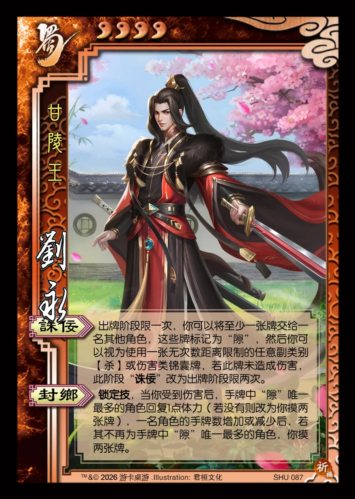

点击卡面查看大图
蜀
刘永
♥4甘陵王
诛佞
出牌阶段限一次，你可以将至少一张牌交给一名其他角色，这些牌标记为“隙”，然后你可以视为使用一张无次数距离限制的任意副类别【杀】或伤害类锦囊牌，若此牌未造成伤害，此阶段“诛佞”改为出牌阶段限两次。
封乡锁定技
锁定技，当你受到伤害后，手牌中“隙”唯一最多的角色回复1点体力（若没有则改为你摸两张牌），一名角色的手牌数增加或减少后，若其不再为手牌中“隙”唯一最多的角色，你摸两张牌。